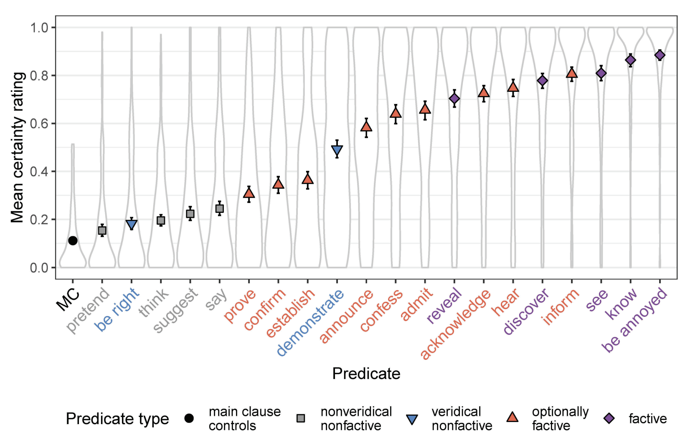
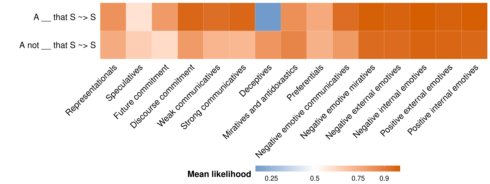

Inferentially defined classes of predicates
In discussing the results of their Experiments 1a and 1b, Degen and Tonhauser (2022, 565) suggest “…that projection does not categorically distinguish canonically factive predicates from others: contrary to what is expected on definition 3a, we observed that the [contents of the complements (CCs)] of predicates standardly classified as factive are not categorically more projective than the CCs of all other predicates.”1

Indeed, in discussing Experiment 1a (p. 563), they make the much stronger claim that “…the results of experiment 1a suggest that projection does not identify a coherent class of factive predicates” because drawing a line “between factive predicates and others based on the projection of the CCs…cannot be done in a nonarbitrary way” (p. 562).
Degen and Tonhauser (2022, 567) furthermore argue on the basis of similar datasets–the MegaVeridicality dataset (White and Rawlins 2018; White et al. 2018), the CommitmentBank (Marneffe, Simons, and Tonhauser 2019), and the VerbVeridicality (Ross and Pavlick 2019) datasets–that “…contrary to what is expected under the definition of factive predicates in 3a, the results of our experiments 1a and 1b as well as our meta-analyses of the CommitmentBank, the VerbVeridicality data set, and the MegaVeridicality data set suggest that projection of the CC does not identify a coherent class of factive predicates” and that this challenge is made even stronger by “…the diversity of the empirical evidence: it comes from constructed and naturally occurring examples, from examples presented with and without a context, from examples with diverse and with minimal lexical content, from clause-embedding predicates embedded under different entailment-canceling operators, and from projection ratings collected through different response tasks” (ibid, p. 568).
The lexical indeterminacy possibility
They go on to admit, however, that (p. 583) “…the observed gradience in projection may be compatible with a binary factivity category in combination with two assumptions: first, that predicates may be ambiguous between a factive lexical entry, on which the CC is presupposed and hence projects, and a nonfactive lexical entry, on which the CC is not presupposed (for such a proposal for clause-embedding predicates see Spector and Egré 2015, 1736; for a similar proposal for evaluative adjectives see Karttunen et al. 2014); and, second, that interpreters may be uncertain about which lexical entry a speaker intended in their utterance” and that “[u]nder such a view, a categorical notion of factivity is upheld, and the observed projection gradience can be hypothesized to be due to listeners’ uncertainty about the use of any given predicate, which may be resolved preferentially one way or another through pragmatic factors.”
This possibility remains live in large part because, while they are working with quantitative data, the stronger argument that the measures of projection they look at does not “identify a coherent class of factive predicates” is based purely on qualitative arguments. So in point of fact, the paper really only provides evidence for the weaker claim that “predicates standardly classified as factive are not categorically more projective than the CCs of all other predicates.” But of course, the standard classification could just be wrong.
In this context, they go on to discuss the idea that one might assess the stronger argument quantitatively using mixture models, but they decline to do so. They have two reasons for this. The first is another argument based on qualitative analysis: ““[t]he account sketched above, on which predicates may have a factive lexical entry, a nonfactive one, or both, does not lead us to expect projection data distributions…that are best captured by three or four components, let alone distributions that are best captured by five or six components” (p. 583). The second is that “[m]ixture models are not, however, a theory of factivity or projection, and as such they do not specify what the generative model underlying the components is.”
We will discuss second argument as a motivation for the modeling we will do in the next section. Before doing that, we’ll assess the first argument in the context of the work by Kane, Gantt, and White (2022).
Are there factive predicates? Yes.
The main motivation for Kane, Gantt, and White (2022) is to understand “which patterns of lexically triggered doxastic, bouletic, neg(ation)-raising, and veridicality inferences are (un)attested across clause-embedding verbs in English”, with the overarching aim of understanding where we see “[g]aps in logically possible patterns of lexically triggered inferences…because they suggest potentially deep constraints on lexicalization (Horn 1972; Barwise and Cooper 1981; Levin and Rappaport Hovav 1991, a.o.)” (ibid, p. 570). To carry out this investigation, they use a multiview mixed effects mixture model to synthesize data from the MegaVeridicality dataset–the same used by Degen and Tonhauser (2022)–along with the MegaNegRaising (An and White 2020) and MegaIntensionality datasets.
What Kane, Gantt, and White (2022) find is that, once we appropriately model potential sources of noise in the way people approach various tasks, there are a small number of clusters of inference patterns attested across predicates that not only correspond extremely closely to those one might expect from the literature but that predict the syntactic distribution of those predicates surprisingly well.
They plot (their Figure 2, p. 580) the centroids of these clusters in terms of the mean likelihood for a particular inference associated with that cluster. We will not be concerned with their particular labels for the clusters except to say that they are based on qualitative analysis of the predicates that show up in those clusters.

The first thing to note about this plot are the five clusters to the right–whose likelihoods for both the entailment inference A __ that S ~> S and the projective inference A not __ that S ~> S–are extremely close to 1.2 The second thing to note is that, among the predicates that show lower likelihood for the projective inference (A not __ that S ~> S), there is substantial variability in how strong that projective inference is.
Summing up
The findings of Kane, Gantt, and White (2022) suggest two things: (i) there are in fact clearly distinguishable subclasses of factive predicates (generally, constituted by emotives and/or miratives); and (ii) consistent with what Degen and Tonhauser (2022) observe, some classes of predicates are associated with inferences that are somehow “weaker” (on average) than those that are sometimes called the “true factives” (Karttunen 1971). The main question we’ll deal with in our models for this module is what it means for the inferences associated with some class to be “weaker”.
References
Footnotes
A similar qualitative observation is also made in passing by White and Rawlins (2018, 228) using the MegaVeridicality dataset: “…there are not necessarily clear dividing lines between these classes present in the data, suggesting that speaker’s inferences about veridicality are generally quite gradient and likely influenced by the fine-grained semantics of particular verbs.”↩︎
These clusters furthermore tend to include emotive–e.g. love and hate–and/or mirative predicates–e.g. surprise. This pattern accords with evidence about the strength of these inferences observed in other experimental work (see, e.g., Djärv, Zehr, and Schwarz 2018).↩︎